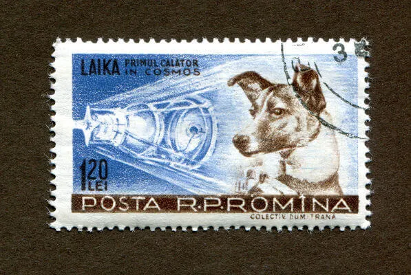

A Guerra por trás dessa foto
A corrida espacial aconteceu entre 1957 e 1975 sendo um dos capítulos da Guerra Fria. Nela, americanos e soviéticos disputavam a hegemonia na exploração espacial.
A corrida espacial foi um dos capítulos mais conhecidos da Guerra Fria, aconteceu entre 1957 e 1975 e foi travada entre Estados Unidos e União Soviética. A corrida espacial foi responsável por mobilizar altas quantias de dinheiro com o intuito de promover a exploração do espaço. Nela, soviéticos e americanos incentivaram o desenvolvimento científico, realizaram expedições tripuladas ao espaço, e, como ápice dessa disputa, foi organizada pelos americanos uma expedição que levou o homem à Lua.
Contexto histórico
A corrida espacial foi um dos acontecimentos mais marcantes da Guerra Fria, conflito político-ideológico que dividiu o mundo durante os anos entre 1947 e 1991. A Guerra Fria foi iniciada logo após o fim da Segunda Guerra Mundial. Ao final dessa guerra, que se estendeu de 1939 a 1945, os Estados Unidos saíram indiscutivelmente como a grande potência mundial. A ascensão da União Soviética durante a guerra e o seu papel como potência do bloco comunista levaram o governo americano a desenvolver uma retórica que guiou o mundo à polarização.Assim, já na década de 1940, o discurso e as ações diplomáticas tomadas pelo governo americano visavam combater o crescimento da influência soviética . A ação dos Estados Unidos em transformar a União Soviética como seu grande adversário visava garantir a força da presença americana no continente europeu e, assim, manter sua economia aquecida. Desse modo, ao longo das décadas de 1940 e 1950, os dois blocos foram organizando-se, cada qual agrupando as nações de sua zona de influência.
Ao longo dos anos de Guerra Fria, a disputa travada entre americanos e soviéticos deu-se em diversas instâncias. Diplomaticamente, cada nação buscava garantir os seus interesses; economicamente, disputava-se a hegemonia mundial; g>militarmente, disputava-se a hegemonia da força; e no âmbito tecnológico a disputa também aconteceu. Um dos desdobramentos da Guerra Fria acabou sendo a disputa tecnológica conduzida por americanos e soviéticos. Nessa disputa, as duas nações investiram maciçamente na educação e promoveram um rápido avanço científico. A corrida espacial foi resultado dessa disputa no âmbito científico. A corrida espacial aconteceu a partir do lançamento de satélites artificiais, sondas espaciais, envio de expedições tripuladas para o espaço e viagens para a Lua. A “conquista” do espaço era algo fundamental dentro da disputa travada por americanos e soviéticos, pois o domínio dessa nova fronteira deixaria bem claro o papel de potência mundial daquele que o fizesse. Além disso, dominar o espaço poderia ser utilizado em questões estratégicas do âmbito militar. Isso porque dominar o espaço poderia permitir monitorar o inimigo por meio de satélites, realizar ataques se necessário etc. Por isso a disputa pelo espaço era tão importante assim. Tratava-se de uma nova fronteira do progresso humano a ser atravessada pela nação ganhadora.
Principais acontecimentos
- Sputnik
Os soviéticos deram o primeiro passo na corrida espacial e, em 4 de outubro de 1957, foi lançado o primeiro satélite em órbita, o Sputnik 1. Foi esse acontecimento que deu início à corrida espacial, e o Sputnik 1 funcionou na órbita da Terra durante 22 dias. Nesse período, o satélite enviou sinais de rádio que foram fundamentais para o estudo do planeta. Pouco tempo depois do lançamento do satélite, a imprensa soviética celebrou o acontecimento como um grande marco da ciência soviética, e o lançamento do Sputnik 1 repercutiu no mundo todo, incluindo os Estados Unidos. O satélite soviético era uma esfera feita de alumínio com 58 centímetros de diâmetro e pesava cerca de 83 kg.
Os soviéticos continuaram inovando e, um mês depois, realizaram o lançamento Sputnik 2, que pesava 508 kge foi responsável por levar o primeiro ser vivo para o espaço. Nessa ocasião, os soviéticos enviaram ao espaço a cadela Laika, que morreu 10 dias depois do lançamento por conta do superaquecimento da estrutura. O Sputnik 2 desintegrou-se ao entrar na atmosfera, no dia 14 de abril de 1958. Ao todo, a União Soviética enviou para o espaço 10 satélites designados Sputnik, e o último deles foi lançado em 25 de março de 1961. O Sputnik 10 enviou outra cadela para o espaço (chamada Zvezdochka), e essa, diferentemente de Laika, foi trazida para a Terra viva. Para saber mais sobre esse assunto, leia nosso texto: Sputnik.
- Nasa e Explorer
A NASA foi criada como parte dos esforços americanos para a competição contra os soviéticos na exploração espacial.
Em resposta ao lançamento dos Sputnik 1 e 2 realizado pelos soviéticos, os Estados Unidos anunciaram o lançamento de seu próprio satélite artificial. Assim, os americanos lançaram o Explorer 1, no dia 31 de janeiro de 1958. Esse satélite foi responsável por descobrir uma região radiativa ao redor da Terra. Essa região ficou conhecida como Cinturão de Van Allen. O Explorer 1 parou de enviar sinais cerca de quatro meses depois e entrou na atmosfera somente em março de 1970. Em seguida, ainda como parte da reação americana aos lançamentos soviéticos, foi criada a National Aeronautics Space Administration, mais conhecida como NASA.Sua criação aconteceu no dia 29 de julho de 1958, durante o governo de Dwight D. Eisenhower(1953-1961). Tem curiosidade no assunto deste tópico? Leia nosso texto: fonte:brasilescola.uol.